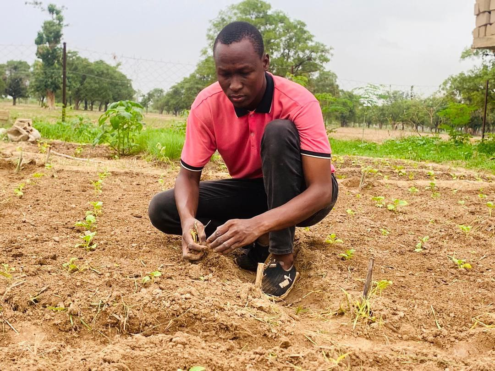

Bienvenue sur le Portfolio de Yiriba dit Abdoulaye DIARRA, Entrepreneur Agricole et passionné de l'Agroécologie
Passionné par l'agriculture durable et l'innovation en agroécologie, je me consacre à promouvoir des pratiques agricoles respectueuses de l'environnement tout en offrant des solutions pour améliorer la sécurité alimentaire. À travers mes projets, je m'efforce de créer des synergies entre la production végétale, l'arboriculture, et l'élevage afin de garantir la disponibilité de fruits et légumes naturels tout au long de l'année, tout en maintenant des prix stables.

- Agriculture durable : Avec des pratiques respectueuses de l'environnement, je m'engage à produire des fruits et légumes bio tout en réduisant l'impact environnemental.
- Développement communautaire : Mes projets, tels que la formation de 100 femmes en transformation agroalimentaire, visent à autonomiser les communautés rurales et à encourager l'entrepreneuriat.
- Agroécologie : Je crois fermement en l'importance de la préservation des écosystèmes agricoles. Mes initiatives intègrent des pratiques agroécologiques, en harmonie avec la nature.
- Yiri Agri : Mon entreprise agricole, qui se concentre sur la production et la vente de légumes et fruits naturels, la prestation de services agricoles et la transformation agroalimentaire.
- Formation et accompagnement technique : J'organise des formations pour les agriculteurs et les entrepreneurs afin de partager des connaissances pratiques sur la production durable, la gestion de ressources et l'optimisation des cultures.
Je mets à votre disposition plus de 5 ans d'expérience dans la gestion de projets agricoles, la mobilisation de fonds et la création de partenariats. Grâce à mon expertise en gestion d'entreprise agricole et en agroécologie, je peux vous aider à atteindre vos objectifs en matière de développement durable et d'innovation agricole.
Explorez Mon Univers
Découvrez mes compétences, mes projets et les opportunités de collaboration qui s'offrent à vous.